Abril Esteve
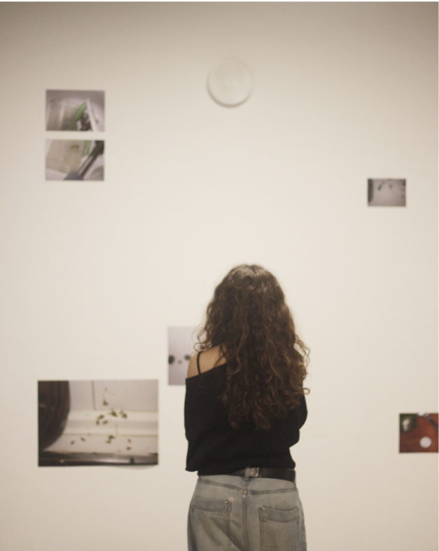
Treballs
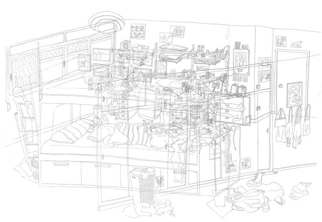
Autorretrat del col·lapse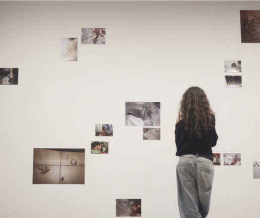
Arròs verd per dinar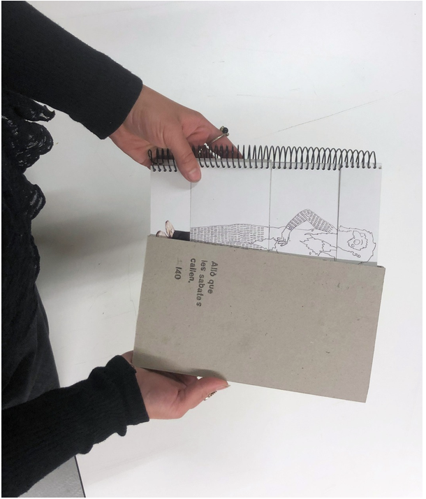
Allò que les sabates callen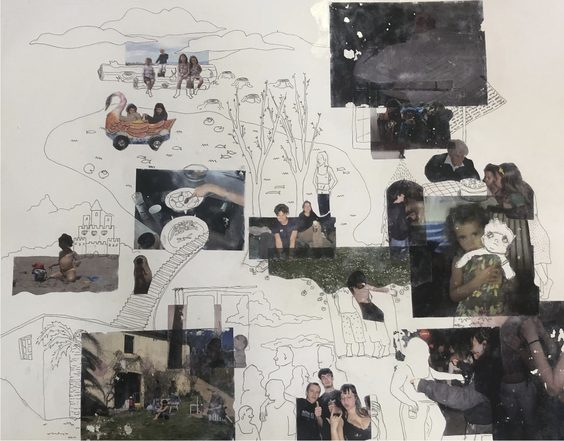
Entre el record i l’oblit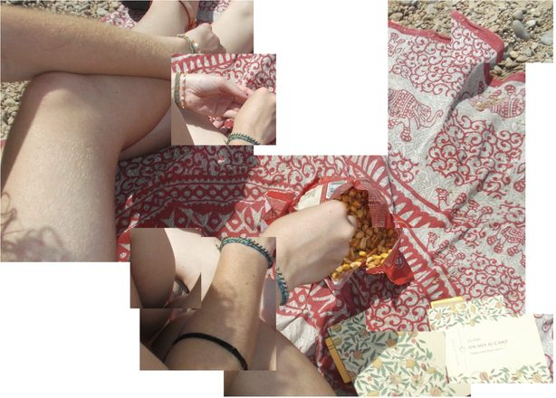
Fragments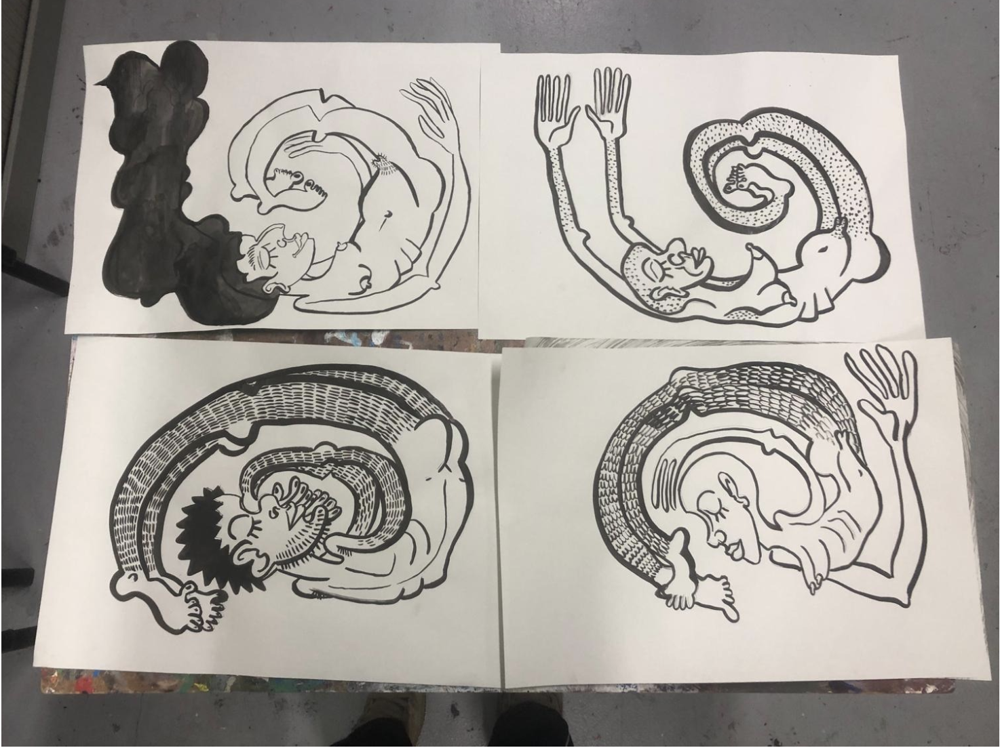
Cargols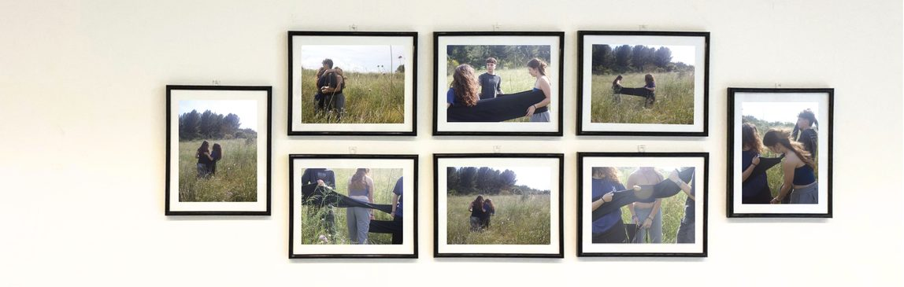
Lligams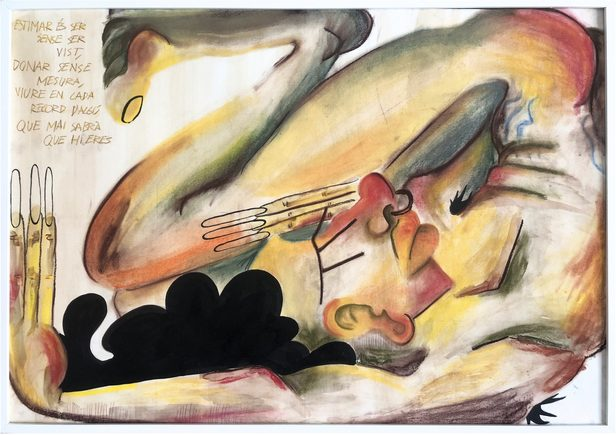
Com estimo?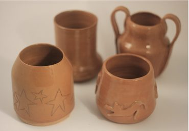
AltresSobre mi
Em dic Abril Esteve, tinc 21 anys i soc de Barcelona. Actualment estudio el grau d'Arts i Disseny a l'Escola Massana. On he après a experimentar amb diferents tècniques, sortir de la meva zona de confort i qüestionar-me què faig, com ho faig i per què ho faig.
Durant la meva formació també he tingut l'oportunitat de fer una estada Erasmus a Portugal, que m'ha permès conèixer altres maneres d'entendre i viure l'art.
La meva pràctica artística parteix de les meves pròpies experiències. Sovint em situo al centre de l'obra per explorar, expressar o qüestionar aspectes de la meva vida privada. Utilitzo l'art com una manera d'entendre'm i d'exterioritzar allò que sento.
M'agrada experimentar amb materials i combinar diferents tècniques, tot i que el dibuix continua sent el meu llenguatge de confort.
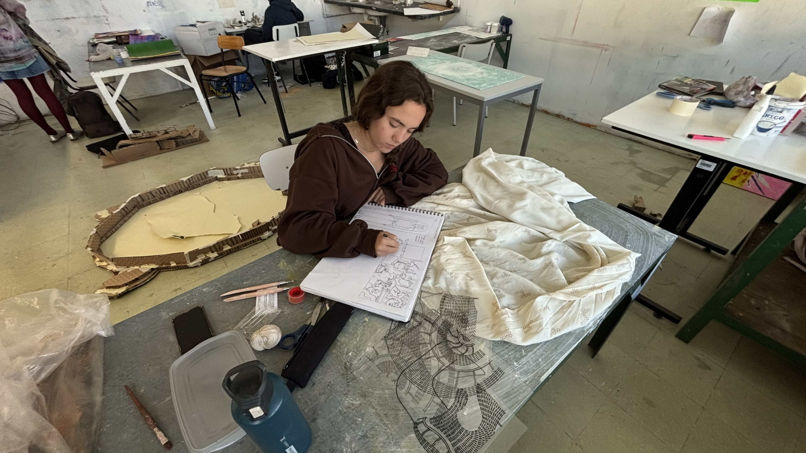